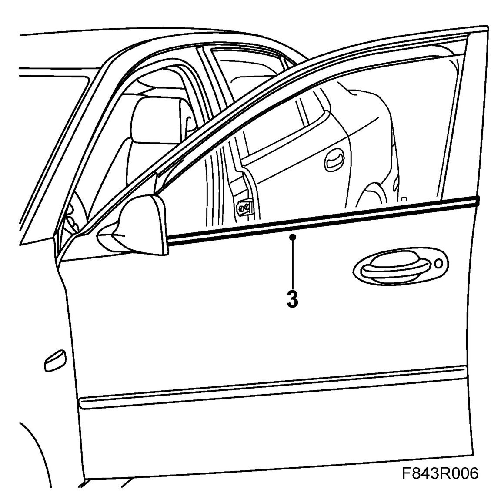
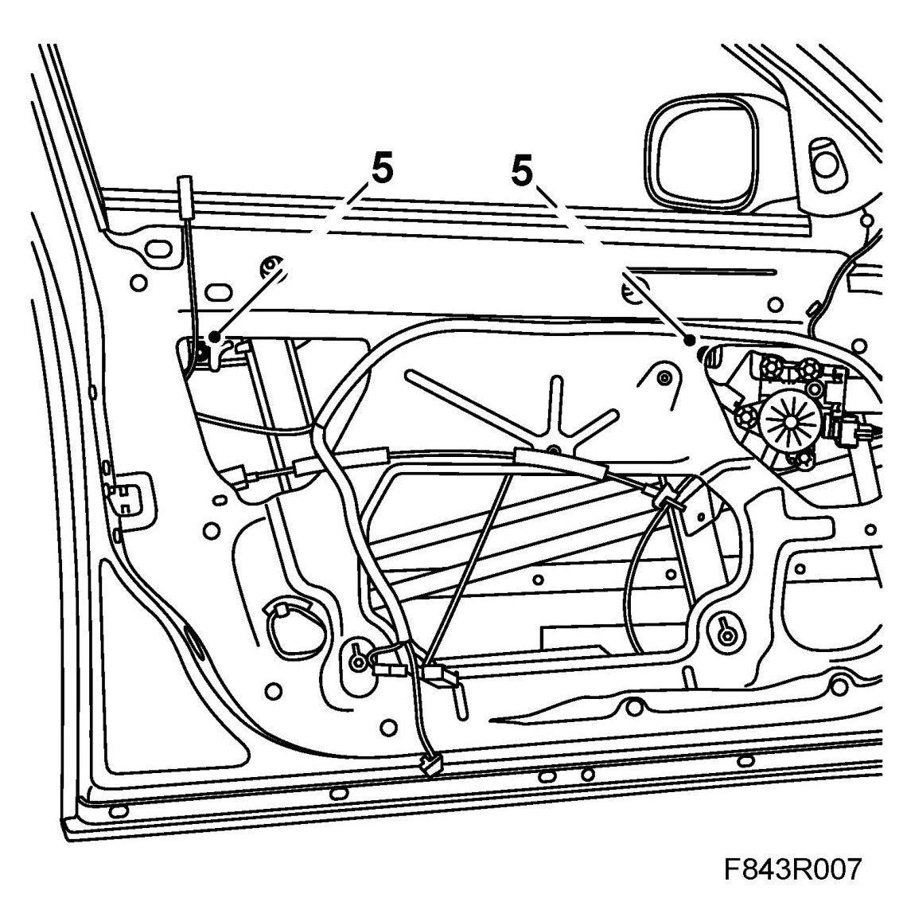
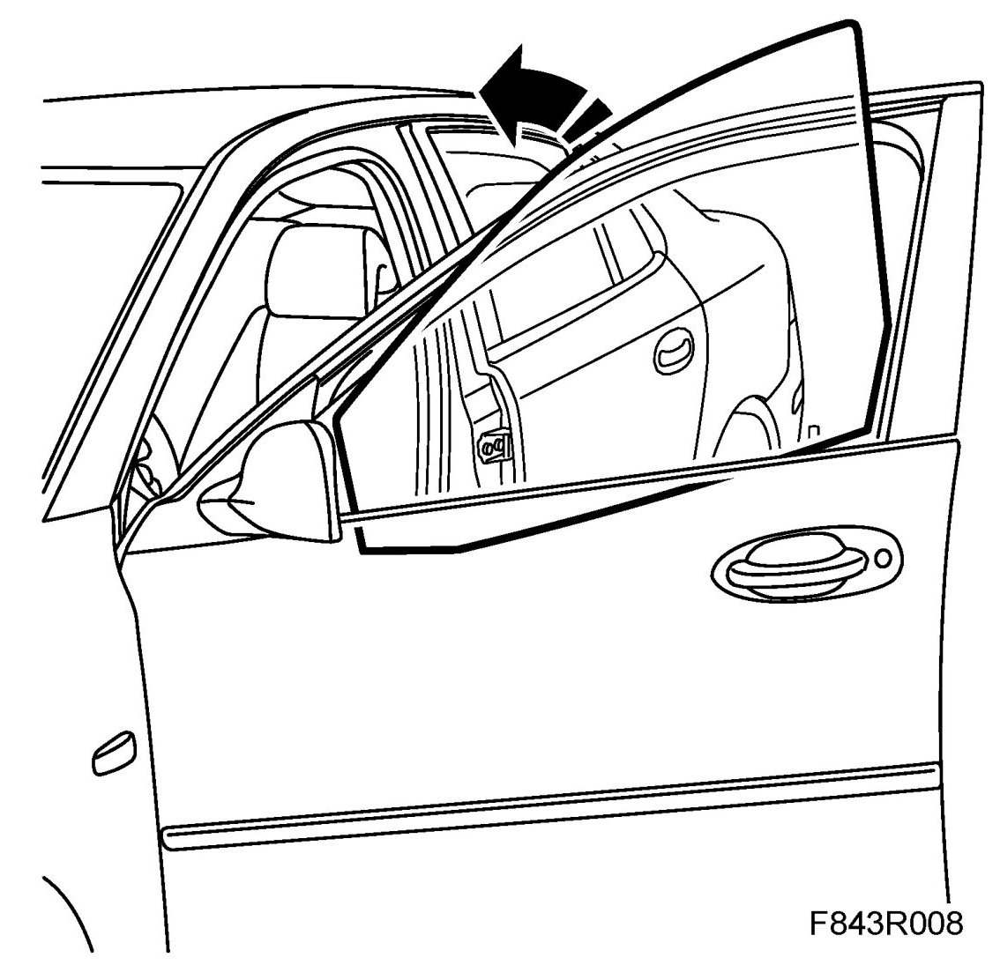
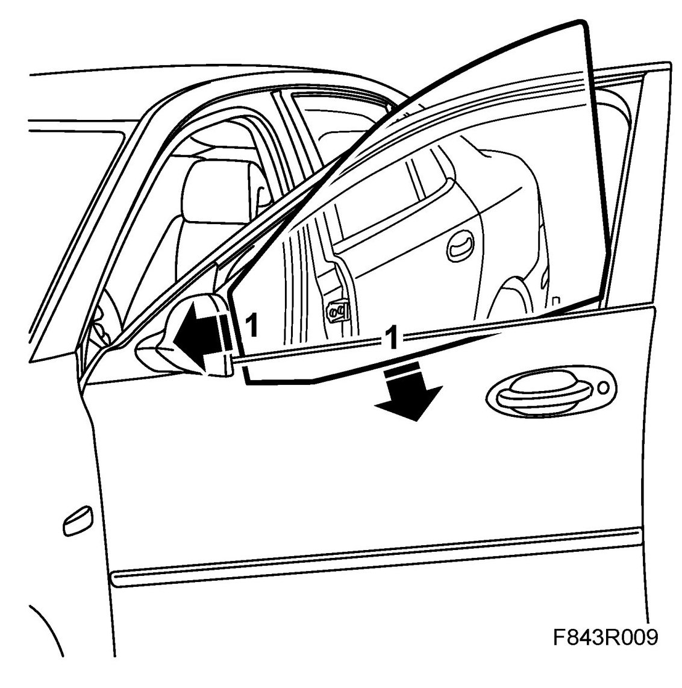
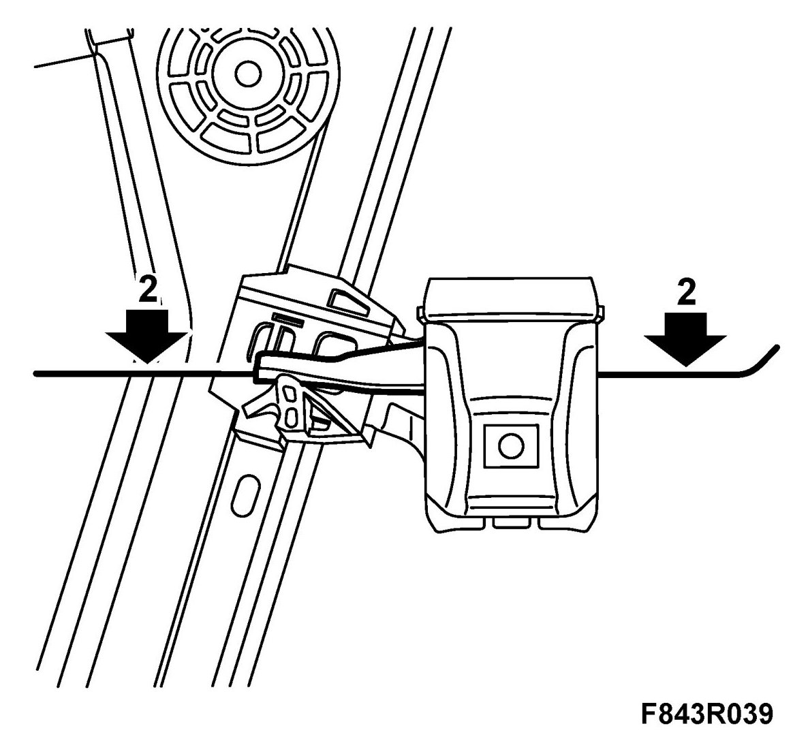
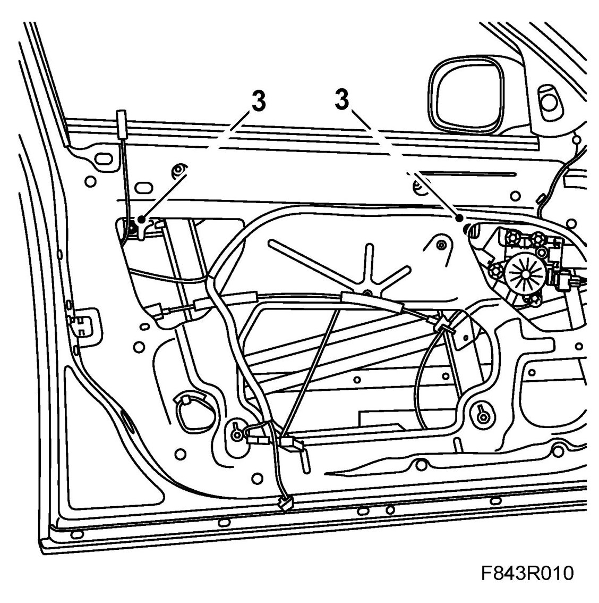
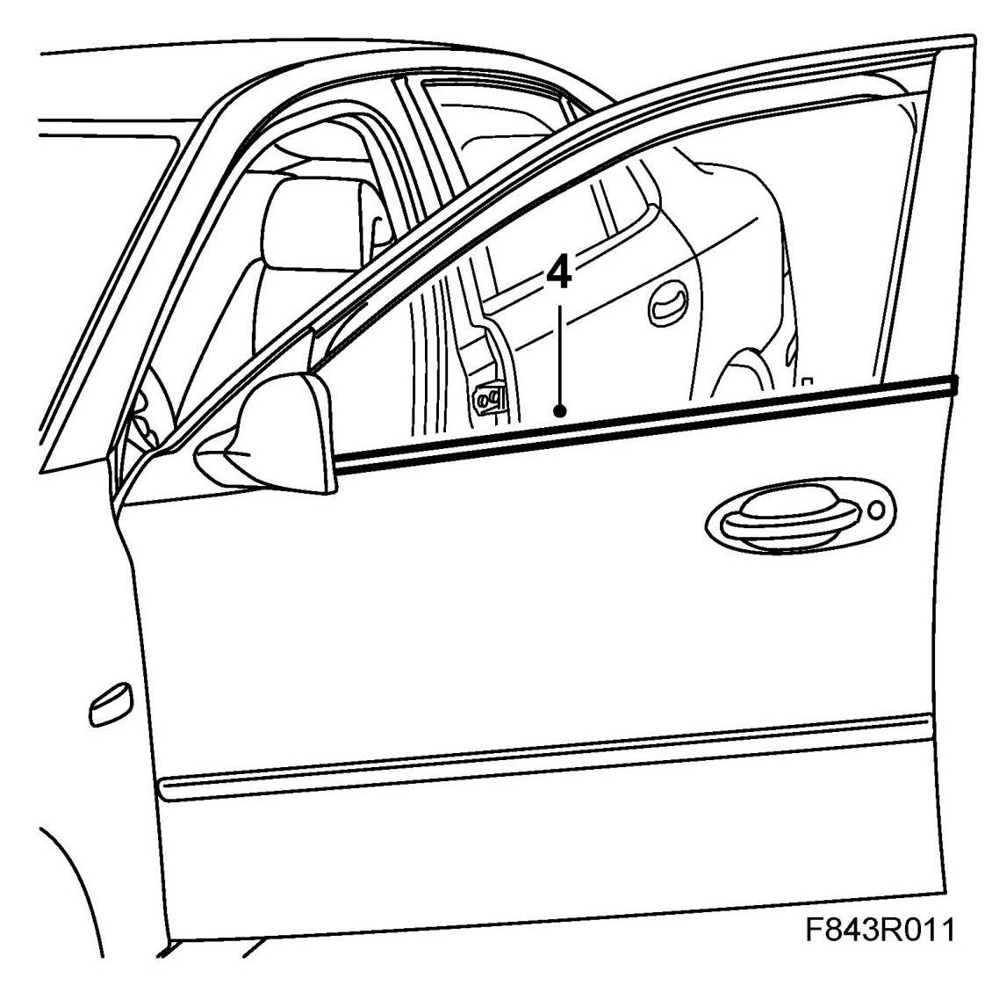

Side Window, Front Door
Side Window, Front Door
To remove
1. Open the window approx. 5 cm.
2. Remove Door trim, front, 4Dand fold down the water barrier.
3. Remove the outer weatherstrip. Lift up the rear edge using the removal tool.

4. Pull the strip out from the base of the door mirror.
5. Slacken the bolts to release the window.

6. Raise the rear edge of the window, angle it out slightly and lift it up.

To fit
1. Insert the front edge of the window into the U-moulding. Angle in the rear edge so that it is located in the rear U-moulding. Make sure that the window is correctly seated in the channels by raising and lowering it.

2. Press the window down into the rubber-covered brackets. (Image from outside)

3. Tighten the bolts.

4. Fit the outer weatherstrip. Press the weatherstrip in under the base of the door mirror then press it home along the top edge of the door.

5. Plug in the window lift connector to the door trim. Close and open the window a few times to check its operation.
6. Fit the water barrier and Door trim, front, 4D.
7. Cars with pinch protection: Perform Calibration of pinch protection.
8. Clean the window.